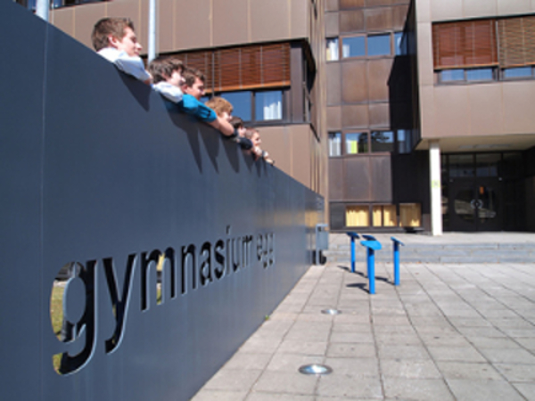

Willkommen auf der Homepage des Gymnasiums Egg
Das Bundesoberstufenrealgymnasium Egg ist eine Allgemeinbildende Höhere Schule und hat die Aufgabe, den SchülerInnen eine umfassende Allgemeinbildung zu vermitteln und sie zur Matura zu führen. Die Schule bietet eine Ausbildung mit drei verschiedenen Schwerpunkten zur Auswahl an.
